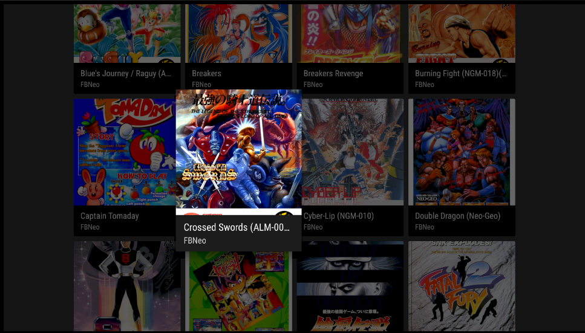

Guardados seleccionados sincronizados
Configura Google Drive y sincroniza datos de guardado seleccionados entre tus dispositivos EmulAItor.
Mantén sincronizados guardados, estados seleccionados y vistas previas mediante Google Drive para continuar en otra pantalla Android.
Descargar EmulAItorExplora todas las funciones
Configura Google Drive y sincroniza datos de guardado seleccionados entre tus dispositivos EmulAItor.
Conserva estados seleccionados y sus vistas previas como parte de tu progreso sincronizado.
Empieza una partida en un dispositivo Android y continúala en otra pantalla.
Vuelve a carátulas, metadatos, favoritos y recientes para elegir tu próxima partida.
Utiliza autosave, guardado rápido o una ranura con vista previa.
Ejecuta la sincronización con Google Drive después de configurarla en EmulAItor.
Abre EmulAItor en otro dispositivo, sincroniza y reanuda desde el guardado disponible.
El flujo verificado cubre guardados, estados seleccionados y vistas previas mediante Google Drive.
Sí. La sincronización con Google Drive permite continuar entre dispositivos EmulAItor.
Sí. Autosave, ranuras con vista previa, guardado rápido y carga rápida forman parte de la experiencia local.